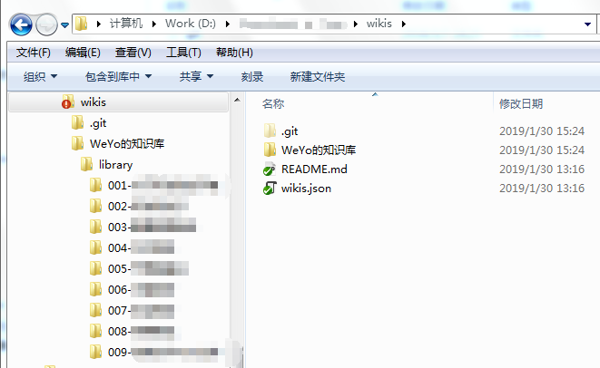
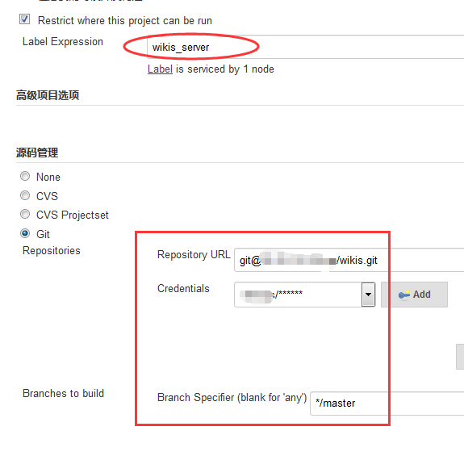
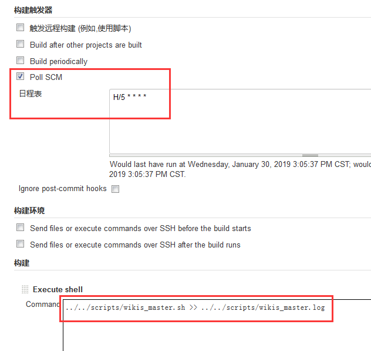

关于 amWiki
很早就想搭建一个足够轻量方便易用的Wiki平台用于个人和团队的知识交互，由于预算有限，商业化的confluence只能暂时放弃，另外也不想花费太大精力去维护这个平台，其他的各类开源免费的Wiki技术（比如mediawiki，dokuwiki 等等）也就不考虑了。寻觅良久，终于发现了一个有意思的项目：amWiki。
根据官网介绍，amWiki的优点在于：
- 文档系统采用 markdown 语法
- 不用数据库，文档使用 .md 格式保存本地文件
- 无需服务端开发，只需支持 http 静态访问网页空间
- 一键创建新的文库
- 自动更新文库导航目录
- 支持多级目录
- 支持截图直接粘帖为本地 png 并插入当前 markdown
- 文档web端自适应显示，适合所有平台
- 支持接口文档自动抓取内容生成简单的ajax测试
- 无需服务端的全文库内容搜索与计分排序
以上加粗字体的内容是我最喜欢amWiki的特性。出于易维护性（i.e. lazy）的需要，不用维护数据库直接使用md文件真的是码农的福音。
定制 amWiki
特性
不过可惜的是，不知道是不是跟Github逐渐放弃Atom有关，原作者在发布1.2.1版本之后就不再更新了，我也不希望只在本地使用wiki，希望能发布成对外的服务，于是就自己捣鼓了几天 nodejs 折腾出了服务器版本的amWiki（Github：https://github.com/weyo/amWiki）。
这个版本的amWiki支持这些特性：
- 在服务器端直接发布 Wiki 服务，并可以通过PM2进行管理
- 支持同时发布多个 Wiki 文库（在首页显示列表）
- 支持自定义配置服务器域名（或地址），以便在云计算平台（以及需要映射实际地址的网络场景）部署服务
- 支持使用命令初始化 Wiki 文库项目并自定义项目名称
- 支持创建文库时配置文库名称及版本
使用方法
使用方法如下。
1. 安装 nodejs 及 PM2 管理工具。
2. 下载 amWiki-服务器版 并拷贝到服务器（以下示例为放入 /usr/local/src/ 目录，为规范化 nodejs 模块考虑，也可以放入 node_modules 目录），并根据需要建立软链接，如将程序启动命令设置为 amwiki2：
ln -s /usr/local/src/amWiki/bin/main.js /usr/local/bin/amwiki2
3. 在服务器上创建 amWiki 项目目录：
mkdir /data/wikis
4. 切换至 amWiki 项目目录，初始化目录：
cd /data/wikis
amwiki2 -i 我的 Wiki 文库
根据需要配置 wikis.json 配置文件：
name- amWiki 项目名称
domain- amWiki 项目服务端域名或地址（不配置则直接展示本地IP）
5. 创建新 Wiki 文库：
amwiki2 create 我的知识库1
amwiki2 create 我的知识库2 V0.1
根据需要配置各个文库的 config.json 配置文件，配置方法参阅config.json 配置。
6. 编辑修改新文库并更新：
amwiki2 update 我的知识库1
amwiki2 update 我的知识库2
7. 使用 PM2 启动 amWiki 服务：
pm2 start 'amwiki2 -s'
随后，即可在浏览器中访问文库：http://<服务器IP>:5171/（端口可根据需要在步骤 7 中调整）。
最终形成的服务器端 amWiki 文库目录结构如下：
/data
├── jenkins
│ ├── scripts
│ │ ├── wikis_master.log
│ │ ├── wikis_master.sh
│ │ ├── wikis_branch1.log
│ │ └── wikis_branch1.sh
│ ├── slave.jar
│ └── workspace
│ ├── wikis-master
│ └── wikis-branch1
├── wikis
│ ├── README.md
│ ├── wikis.json
│ ├── 我的知识库1
│ │ ├── amWiki
│ │ ├── config.json
│ │ ├── index.html
│ │ └── library
│ └── 我的知识库2
│ ├── amWiki
│ ├── config.json
│ ├── index.html
│ └── library
└── wikis_bak
├── README.md
├── wikis.json
├── 我的知识库1
│ ├── amWiki
│ ├── config.json
│ ├── index.html
│ └── library
└── 我的知识库2
├── amWiki
├── config.json
├── index.html
└── library
配置 Jenkins 自动发布
为了便于 wiki 的更新维护，使用 git 和 jenkins 搭建了一套自动发布环境，通过 git 仓库管理 md 格式的 wiki 文库，可以在提交更新后自动在服务器端进行发布。
Git 仓库管理模式
为了支持不同项目组维护不同的 wiki 文库，有两种方式，第一种方式是每一个 wiki 文库分别建立不同的 git 仓库，每个 git 仓库对应一个 jenkins 任务；第二种方式是建立一个 git 仓库，然后在不同的 git 分支分别管理不同的 wiki 文库，并针对每一个分支分别建立独立的 jenkins 任务，两种方式各有优劣，可根据需要选择。
本地 Wiki 项目目录
以下是一个建立好的 git 仓库本地 wiki 目录结构图（本文均以 master 分支为例）。

Jenkins 配置
1. 指定文库服务器做构建服务器，并配置 git 仓库（注意，需要先将构建服务器的公钥 id_rsa.pub 添加到 git 项目的 key 中）；

2. 配置构建计划（这里每5分钟执行一次检查），并确认构建命令脚本

其中，脚本内容（wikis_master.sh）如下，供参考：
#! /bin/bash
rm -rf /data/wikis_bak/WeYo的知识库/{library,config.json}
mv /data/wikis/WeYo的知识库/{library,config.json} /data/wikis_bak/WeYo的知识库
mv /data/wikis/wikis.json /data/wikis_bak
cp -r ./WeYo的知识库/{library,config.json} /data/wikis/WeYo的知识库
cp ./wikis.json /data/wikis
cd /data/wikis
# 防止windows gbk编码与amwiki要求的utf-8编码不同，需要做编码转换
convmv -f gbk -t utf8 -r --notest ./
amwiki2 -u WeYo的知识库
exit 0
# END
3. 本地编辑 wiki 文库，并提交 git 仓库，确认 Jenkins 执行状态，如果构建成功刷新浏览器即可看到文库的更新内容。
Comments
comments powered by Disqus